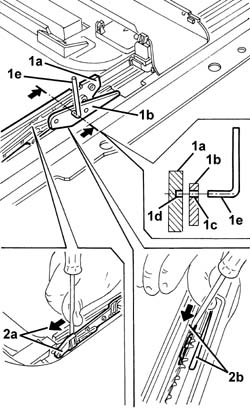

7030B54 sun roof systems
- Path
- Procedures > 70 FITTINGS > 7030 SUN ROOF AND HOOD > 7030B sliding roof > 7030B54 sun roof systems
- Kind
- repair procedure (removal / refitting; the operation number is the code)
- Applies to
- all engines; all production periods
- Interactive page
- https://sloeber94.github.io/elrnDB-a147/en/#/3025776
Applies to: all engines; all production periods
CHECKING SLIDE ALIGNMENT.
If there are no faults which prevent this possibility, place the sun roof in the 'closed' position.
7030B18 sliding roof glass - r+r
1. On the slides (1a) and (1b) on both sides of the sun roof, check that the through hole (1c) oines up with the blind hole (1d); carry out this check using a pin (1e) of the same diameter as the holes. If the result is negative, align the slides (1a) and (1b) as described below.
SLIDE ALIGNMENT.
5580E22 Anti-theft device VOLUMETRIC SENSORS - R.R. after checking electrical circuit
7030B70 sun-roof control switch - r+r
2. Move the main slides (2a) manually fully forwards, then move the slides (2b) on both sides forwards until the through hole (1c) lines up with the blind hole (1d); carry out this check using a pin (1e).
In the above-mentioned condition, 7030B70 sun-roof control switch - r+r

Applies to: all engines; all production periods
7030B18 sliding roof glass - r+r
Test the sun-roof to ensure it is sliding properly.
Topics linked from this page (3)
- 5580E22 Anti-theft device VOLUMETRIC SENSORS - R.R. after checking electrical circuit
- 7030B18 sliding roof glass - r+r
- 7030B70 sun-roof control switch - r+r